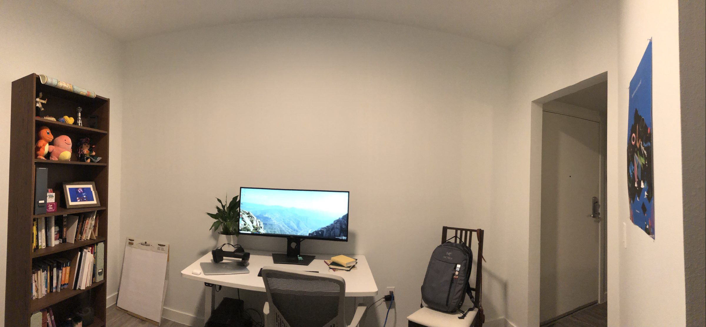
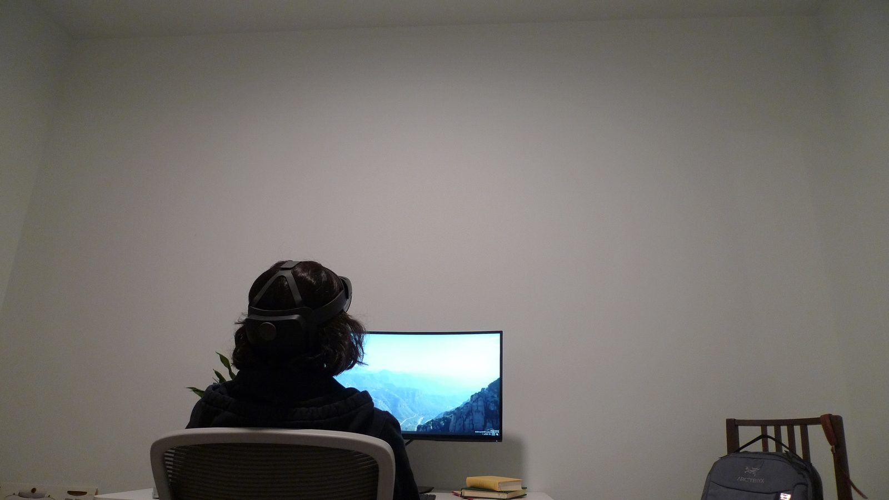
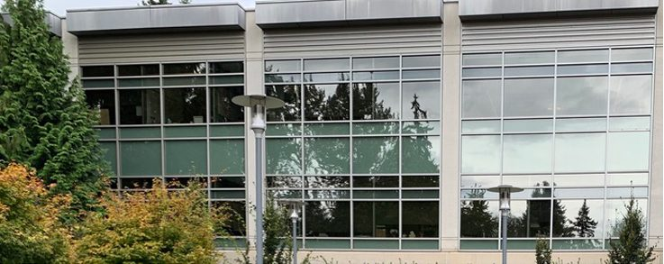
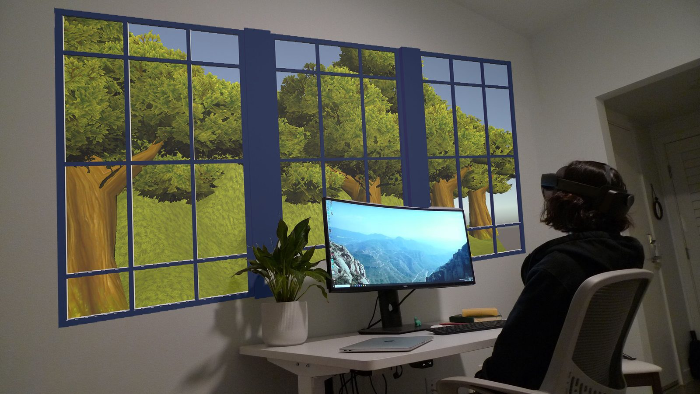

Window in a Den
2020
working from home
since March
from my windowless den

parked in front of my screen
facing a wall

missing the office windows
the natural scenery outside
brief serenity offered by the trees and sky
between meeting rooms

I wanted to recreate this feeling
create a scene beyond my wall
A portal to transport me
An augmented window in my office
